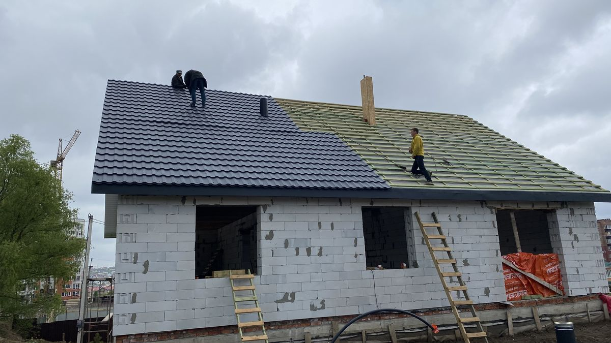

Капитальный монтаж кровли от стропил до конька
Строим долговечные крыши в Ростове-на-Дону. Официальная гарантия на монтажные работы и материалы заводов Grand Line и Технониколь по договору.
Рассчитать стоимостьСтроим долговечные крыши в Ростове-на-Дону. Официальная гарантия на монтажные работы и материалы заводов Grand Line и Технониколь по договору.
Рассчитать стоимость
Сборка несущего каркаса из калиброванного пиломатериала. Расчет шага стропил под проектные нагрузки, обязательная антисептическая обработка древесины.
Укладка супердиффузионных мембран Технониколь, монтаж контрбруска для вентиляционного зазора и пароизоляции. Защита утеплителя от гниения и конденсата.
Монтаж металлочерепицы Grand Line с толщиной стали 0.5 мм или многослойной гибкой черепицы. Монтаж доборных элементов, примыканий и водостоков.
Шаг Обрешетки вымеряется до миллиметра под шаг волны металлочерепицы Grand Line. Исключены провисания, деформации и задувание осеннего ветра.
Поставляем сертифицированные кровельные материалы напрямую со складов производителей. Никаких наценок перекупщиков и поддельного тонкого металла.
Цена за м2 кровельных работ утверждается до заезда бригады на объект. Никаких внезапных доплат за подъем материалов или монтаж карнизных планок.